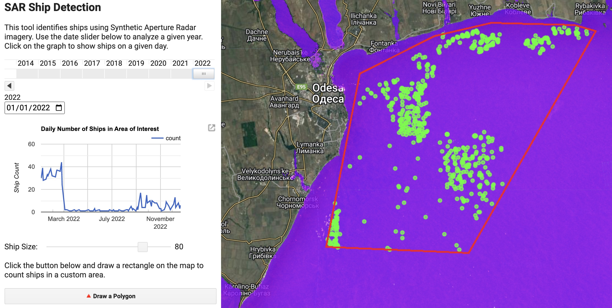

Ship Detection
There’s a huge amount of data available on the internet about ship movements, most of which draw on the Automatic Identification System (AIS) which is a system that uses radio to broadcast the identity, position, course, speed, and other data about ships. MarineTraffic, for example, provides an API that allows you to query the location of ships in real time as well as historical vessel tracks and lots of other useful data. Unfortunately most sources of AIS data are paywalled, and AIS can be turned off or manipulated to hide the identity or position of the ship. In fact, most of the stuff we’re interested in investigating probably happens when AIS is turned off.
Though ships can hide by turning off their AIS transponders, they can’t hide from satellites. In this tutorial, we’re going to build an application that uses Synthetic Aperture Radar (SAR) from the European Space Agency’s Sentinel-1 satellite to automatically identify ships, regardless of whether they’ve got their transponders turned on or off. Here’s the finished application:
How it Works
The app has two main panels:
- A control panel on the left that allows the user to interact with the application
- A map on the right that displays the results
The control panel has a date slider that allows the user to load imagery from a particular year. Below that is a graph that shows the number of ships detected over time within that year. A slider underneath the graph lets us toggle the sensitivity of the ship detection process. Finally, a button at the bottom lets the user draw their own area of interest on the map, and the app will automatically detect ships within that area.
The map panel visualizes the results of the ship detection process and has three layers. The bottom layer is the Sentinel-1 image that we’re using to detect ships; it’s blue/purple, and if you zoom in and look closley you can see bright specks in the sea, which are ships. When Sentinel-1 sends a pulse of radio waves onto a flat surface like the sea, there is very little to reflect the waves back to the satellite– they just bounce off into space. A low return signal means we’ll see a darker color on our map. But when the raio waves hit a ship they are reflected back to the satelite and generate a higher return signal, and therefore a much brighter color. The second layer on the map displays a bunch of green points; each one of these is a detected ship. The last layer shows the red outline of the area of interest that the user drew on the map. You can zoom in on the map by holding down the command button and scrolling up and down.
When the application is first loaded it is centered on an area just north of the Suez Canal, and is analyzing imagery from 2021. We can see a bunch of green dots in the AOI, which is the main waiting area for ships waiting to transit the canal. It’s a bit crowded because it’s visualizing all of the ships detected in the entire year. We can display imagery from a single day by clicking on a point in the graph on the left, which you will notice displays a huge spike in the number of ships detected around March.
You might remember that on March 23rd, 2021, the Ever Given– a 400m long container ship– got stuck in the Suez Canal. The ship was blocking the canal for six days, and it’s estimated that it cost the global economy $400 million per day. If you click on the tip of the spike on March 30th, you can see backup of around 150 ships waiting for the canal to be cleared. You can also zoom in on a particular date range by scrolling and dragging on the graph. If you zoom in on the spike, you can then select imagery from early April to compare the number of ships in the waiting area after the blockage was cleared. In normal times we can see a regular pattern in the number of ships in the waiting area ranging between 15 and 40 ships.
If you’re closely zoomed in to the map and load imagery from different days by clicking on the graph, you can compare the bright spots on the Sentinel image and the green dots. The ship detection process is pretty accurate, and we typically see one green dot per ship. However, you may notice that we occasionally miss a ship. This is because the ship detection process is based on a threshold, and if the ship is too small it may not generate a high enough return signal to be detected. You can increase the sensitivity of the ship detection process by moving the slider below the graph. This will increase the number of ships detected, but it may also increase the number of false positives.
The next section focuses on building this application. After that, we’ll have a look at a few different use cases for this sort of maritime surveillance.
Building the Application
Setup
The first step is to configure the map and import the necessary datasets. By default, we want the app to be centered on the Suez Canal. Then, we want to import the Digital Surface Model (DSM) from the ALOS World 3D-30 dataset. This dataset provides a 30m resolution elevation model of the Earth which we will use to mask out the land. Finally, we want to import the Sentinel 1 dataset. We will use the VV polarization and the Interferometric Wide (IW) mode. We will also sort the images by date.
// Center the map on the Suez Canal and set map options
Map.setCenter(32.327, 31.4532, 10);
Map.setOptions("Hybrid");
Map.setControlVisibility({ all: false });
// Import the Digital Surface Model (DSM) from the ALOS World 3D-30 dataset
var dem = ee.ImageCollection("JAXA/ALOS/AW3D30/V3_2").mean().select("DSM");
// Import the Sentinel 1 dataset
var s1 = ee
.ImageCollection("COPERNICUS/S1_GRD")
.filter(ee.Filter.listContains("transmitterReceiverPolarisation", "VV"))
.filter(ee.Filter.eq("instrumentMode", "IW"))
.sort("system:time_start");
// Define the default area of interest
var suez = ee.Geometry.Polygon([
[
[32.17388584692775, 31.59541178442045],
[32.17388584692775, 31.327159861902278],
[32.4787564523965, 31.327159861902278],
[32.4787564523965, 31.59541178442045],
],
]);Now that we’ve gotten that out of the way, we can move on to the actual detection of ships.
Ship Detection
You might expect the automatic identification of ships based on synthetic aperture radar satellite imagery to involve a complex machine learning algorithm or artificial intelligence. In fact, it can be done in one line of code which sets a cutoff. If the return signal is greater than 0, then we have a ship. If it’s less than 0, then we don’t. Simple as that.
The main analytical function responsible for ship identification is the getVectors function shown below. It takes an image as an input and returns a FeatureCollection of points, each corresponding to a ship. The function clips the image to the area of interest, selects the VV polarization, and finally filters out areas where the VV value is smaller than 0. This results in a raster image where the sea is black and the ships are white. We then use the reduceToVectors function to convert the raster image to a FeatureCollection of points. The function returns this FeatureCollection, and sets a property called count which is the number of ships detected in the image.
function getVectors(img) {
// Get the area of interest from the drawing tools widget.
var aoi = drawingTools.layers().get(0).getEeObject();
// Clip the image to the area of interest
// Select the VV polarization
// Filter areas where the VV value is greater than 0
var cutoff = img.clip(aoi).select("VV").gt(0)
// Convert the raster image to a FeatureCollection of points
var points = cutoff.reduceToVectors({
geometry: aoi,
scale: scaleSlider.getValue(),
geometryType: "centroid",
eightConnected: true,
maxPixels: 1653602926,
});
// Set the number of ships detected in the image as a property called "count"
var count = points.size();
// Set the date of the image as a property called "system:time_start"
var date = ee.Date(img.get("system:time_start"));
return points.set("count", count).set("system:time_start", date);
}The count and system:time_start properties are used to create the graph of daily ship counts and allow the resulting vector (point) data to interact with the date slider widget. An important detail here is that the “scale” parameter of the reduceToVectors function is set to the value of the scale slider widget. This allows the user to adjust the resolution of the ship detection process; a smaller value will allow us to detect smaller ships.
Visualization
The viz function is responsible for displaying the results of the ship detection process. It takes the area of interest, the vector data, and the Sentinel 1 image as inputs. Nothing super complicated here; we’re just creating three layers and adding them to the map in order: the underlying Sentinel-1 image raster, the ship vector data in green, and the area of interest outline in red. We’re using the Map.layers().set() function to replace the existing layers with the new ones, rather than addine new ones each time.
function viz(aoi, vectors, s1Filtered) {
// Create an empty image into which to paint the features, cast to byte.
var empty = ee.Image().byte();
// Paint all the polygon edges with the same number and width, display.
var outline = empty.paint({
featureCollection: aoi,
color: 1,
width: 3,
});
// Create a layer for the area of interest in red
var aoi_layer = ui.Map.Layer(outline, { palette: "red" }, "AOI");
// Create a layer for the vector data in green
var vectorLayer = ui.Map.Layer(
vectors.flatten(),
{ color: "#39ff14" },
"Vectors"
);
// Create a layer for the Sentinel 1 image in false color
var sarLayer = ui.Map.Layer(
s1Filtered,
{ min: [-25, -20, -25], max: [0, 10, 0], opacity: 0.8 },
"SAR"
);
// Add the layers in order
Map.layers().set(0, sarLayer);
Map.layers().set(1, vectorLayer);
Map.layers().set(2, aoi_layer);
}We want a function to handle the visualization because there are two different situations in which we’re going to visualize results, and we dont want to repeat our code. The first situation is when the user draws a new area of interest, moves the date slider, or alters the scale. In this case, we want to visualize the results of the ship detection process for the entire year’s worth of Sentinel-1 imagery. The second situation is when the user clicks on the chart to analyze a particular day. In this case, we obviously only want to visualize the results of the ship detection process on that day. With this function, we can simply pass the appropriately filtered versions of the Sentinel-1 image and vector data to the function, and it will visualize the results, rather than having to write the same code twice.
Putting it all together
Having defined a few helper functions to handle the visualization and ship detection process, we can now move on to the main function that will perform the analysis. This will be performed by the daterangeVectors function. In a nutshell, it read the user specified date range from the date slider widget, and filter the Sentinel 1 dataset to only include images within that period. Then, it will loop through each Sentinel-1 image from that year and apply the getVectors function to count the number of ships that fall within the area of interest and generate a dataset of points corresponding to detected ships. We’ll then use the viz function we just defined to visualize the all of the ship detections and Sentinel-1 images in the AOI during that year stacked on top of each other. Finally, we’ll create a chart based on the number of ships detected per day, and allow the user to click on the chart to visualize the results for a particular day.
var daterangeVectors = function () {
// Get the date range from the date slider widget.
var range = ee.DateRange(
ee.Date(dateSlider.getValue()[0]),
ee.Date(dateSlider.getValue()[1])
);
// Get the area of interest from the drawing tools widget.
var aoi = drawingTools.layers().get(0).getEeObject();
// Hide the user-drawn shape.
drawingTools.layers().get(0).setShown(false);
// Filter the Sentinel 1 dataset to only include images within the date range, and within the area of interest.
var s1Filtered = s1.filterDate(range.start(), range.end()).filterBounds(aoi);
// Count the number of ships in each image using the getVectors function
var vectors = s1Filtered.map(getVectors);
// Use the viz function to visualize the results
viz(aoi, vectors, s1Filtered.max().updateMask(dem.lte(0)));
// Create a chart of the number of ships per day
var chart = ui.Chart.feature
.byFeature({
features: vectors,
xProperty: "system:time_start",
yProperties: ["count"],
})
.setOptions({
title: "Daily Number of Ships in Area of Interest",
vAxis: { title: "Ship Count" },
explorer: { axis: "horizontal" },
lineWidth: 2,
series: "Area of Interest",
});
// Add the chart at a fixed position, so that new charts overwrite older ones.
controlPanel.widgets().set(4, chart);
// Add a click handler to the chart to filter the map by day.
chart.onClick(filterDay);
};There’s one function referenced above– filterDay– that we haven’t defined yet. This function is called when the user clicks on the chart to analyze a particular day. It takes the date of the clicked day as an input, filters the Sentinel-1 dataset and vector data accordingly, and uses the viz function to display the results for that day.
function filterDay (callback) {
// Get the date of the clicked day
var date = ee.Date(callback);
// Filter the vector data to only include images from that day
var vectorDay = vectors.filterDate(date);
// Filter the Sentinel-1 imagery to only include images from that day
var s1Day = s1.filterDate(date).max().updateMask(dem.lte(0));
// Use the viz function to visualize the results
viz(aoi, vectorDay, s1Day);
};The analytical portion of the application is now complete. Now we have to build a user interface that lets us interact with the application.
Building a User Interface
There are four main steps in the process of creating the User Interface (UI):
- Configure the drawing tools that allow the user to draw a polygon on the map.
- Create some widgets
Drawing Tools
We eventually want to allow the user to draw a polygon on the map, and count the number of ships that fall within it. In order to do so, we need to set up a few functions related to the drawing tools that allow the user to do this. Among other things, we want to make sure that we’re clearing the old geometries so that we’re only ever conducting analysis inside the most recent user-drawn polygon, so we’ll need to clear the old ones. We also want to specify the type of polygon the user can draw, which for ease will be a rectangle (you could change this to the actual “polygon” type if you wanted to draw more complex geometries).
var drawingTools = Map.drawingTools();
// Remove any existing layers
while (drawingTools.layers().length() > 0) {
var layer = drawingTools.layers().get(0);
drawingTools.layers().remove(layer);
}
// Add a dummy layer to the drawing tools object (the Suez Canal box)
var dummyGeometry = ui.Map.GeometryLayer({
geometries: null,
})
.fromGeometry(suez)
.setShown(false);
// Add the dummy layer to the drawing tools object
drawingTools.layers().add(dummyGeometry);
// Create a function that clears existing geometries and lets the user draw a rectangle
function drawPolygon() {
var layers = drawingTools.layers();
layers.get(0).geometries().remove(layers.get(0).geometries().get(0));
drawingTools.setShape("rectangle");
drawingTools.draw();
}Widgets
The control panel will eventually contain a few different widgets that allow the user to interact with the application. We’ll start by creating a button that allows the user to draw a polygon on the map. We’ll also create a slider that allows the user to adjust the size of the ships that are detected (remember, this manipualtes the “scale” parameter in the reduceToVectors function used in the detection process). The slider will have an accompanying label that tells the user what it does.
// Create a button that allows the user to draw a polygon on the map
var drawButton = ui.Button({
label: "🔺" + " Draw a Polygon",
onClick: drawPolygon,
style: { stretch: "horizontal" },
});
// Create a slider that allows the user to adjust the size of the ships that are detected
var scaleSlider = ui.Slider({
min: 1,
max: 100,
value: 80,
step: 1,
onChange: daterangeVectors,
style: { width: "70%" },
});
// Create a label for the slider
var scaleLabel = ui.Label("Ship Size: ");
// Create a panel that contains the slider and its label
var scalePanel = ui.Panel({
widgets: [scaleLabel, scaleSlider],
style: { stretch: "horizontal" },
layout: ui.Panel.Layout.Flow("horizontal"),
});The last widget we’re going to define is the date slider. This widget will trigger the daterangeVectors function, which will filter the Sentinel-1 dataset to only include images from the selected year, and then run the detection process on the filtered dataset.
// Specify the start and end dates for the date slider
var start = "2014-01-01";
var now = Date.now();
// Create a date slider that allows the user to select a year
var dateSlider = ui.DateSlider({
value: "2021-03-01",
start: start,
end: now,
period: 365,
onChange: daterangeVectors,
style: { width: "95%" },
});The Control Panel
Now we’re going to assemble all of the widgets we’ve just defined into one panel, alongsie some explanatory text. I’m adding a blank label to the panel as a placeholder for the chart, since it will be re-added to the panel every time the user changed the date on the date slider, the AOI, or the scale.
var controlPanel = ui.Panel({
widgets: [
ui.Label("SAR Ship Detection", {
fontWeight: "bold",
fontSize: "20px",
}),
ui.Label(
"This tool identifies ships using Synthetic Aperture Radar imagery. Use the date slider below to analyze a given year. Click on the graph to show ships on a given day.",
{ whiteSpace: "wrap" }
),
dateSlider,
ui.Label(),
scalePanel,
ui.Label(
"Click the button below and draw a rectangle on the map to count ships in a custom area."
),
drawButton
],
style: {maxWidth: "400px"},
layout: ui.Panel.Layout.flow("vertical", true),
});Once the control panel has been defined, we can add it to
// Add the control panel to the map
ui.root.insert(0,controlPanel);
// Trigger the daterangeVectors function when the user draws a polygon
drawingTools.onDraw(ui.util.debounce(daterangeVectors, 500));
// Run the daterangeVectors function to initialize the map
daterangeVectors();And there we have it. A fully functional, all weather, daytime/nighttime ship detection tool that doesn’t rely on AIS data. Let’s play around with it.
Taking it for a spin
North Korea
In 2020, North Korea implemented one of the most severe COVID-19 lockdowns in the world including a near-total ban on “all cross-border exchanges, including trade, traffic, and tourism”.. Measures have been so severe that country appears to have experienced a significant famine. Though there were signs that things have gradually returned to normal, information on North Korea’s economy is pretty hard to come by. Ship traffic in and out of the country’s largest port, Nampo, is probably a pretty good indicator of the country’s economic activity.
But we can’t just head on down to Marine Tracker or other services that use AIS data to track ship movements. According to the U.S. Treasury, “North Korean-flagged merchant vessels have been known to intentionally disable their AIS transponders to mask their movements. This tactic, whether employed by North Korean-flagged vessels or other vessels involved in trade with North Korea, could conceal the origin or destination of cargo destined for, or originating in, North Korea.” They should know– they’re the ones imposing the sanctions that make it illegal to trade with North Korea.
A New York Times investigation tracked the maritime voyage of luxury Mercedes cars from Germany to North Korea via the Netherlands, China, Japan, South Korea, and Russia. AIS transponders were turned off at several points throughout this journey, and the investigation had to rely on satellite imagery to fill in the gaps.
Though they used high resolution optical imagery to follow individual ships, we want to identify lots of ships in a large area over a long period. That would get very expensive, and automatic ship detection in optical imagery is relatively difficult. Here’s how our SAR tool fares when we draw a box in the bay of Nampo:

Looking at imagery from 2021, we can see ship traffic increasing from nearly zero to around 40 ships per day.
Ukraine
Odessa is Ukraine’s largest port. Following its invasion of Ukraine in February 2022, Russia instituted a naval blockade against Ukrainian ports. The impact of this blockade is clearly visible using the tool we’ve just built:

The daily number of ships detected in the port of Odessa dropped from 40-50 to 0-5 following the invasion, and remained near zero until the blockade was lifted in September 2022.